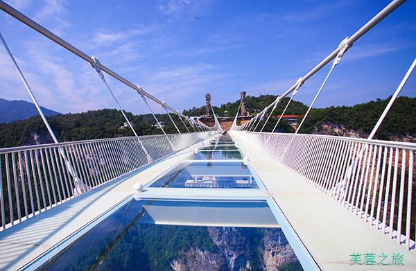

一、概述
走进张家界
张家界是湖南一个地级市，位于湖南西北部，属武陵山脉腹地，为中国最重要的旅游城市之一。 张家界景区共分为四大块：张家界国家森林公园，杨家界自然保护区，天子山自然保护区，索溪峪自然保护区四大景区，统称为武陵源风景名胜区。张家界国家森林公园是中国第一个国家森林公园，景区集神奇、钟秀、雄浑、原始、清新于一体，以岩称奇。园内连绵重叠着数以千计的石峰，奇峰陡峭嵯峨，千姿百态，或孤峰独秀，或群峰相依，造型完美，形神兼备。 除武陵源核心景区外，武陵源区有“中华最佳洞府”“地下龙宫”黄龙洞、“人间瑶池”宝峰湖、“江南名刹”普光禅寺、土家人的“圣地”土家风情园等等旅游景点。
最佳季节：3-5、9-11月。春天的张家界芳草茵茵，溯金鞭溪，游十里画廊，探黄龙洞，可以体会武陵人进入桃花源的惊喜；秋天的张家界层林尽染，正是猕猴桃、蜜橘等水果成熟的时节。相对而言，夏季高温多雨，冬季气候寒冷，舒适度稍逊于春秋。
建议游玩：2-3天
二、美食
▶吃什么：
张家界美食
在张家界景区附近的宾馆用餐是非常贵的，蔬菜15元以上，带肉的菜每份30元以上，野味菜80元以上，如野猪肉、竹鸡、枞菌等。而在张家界市区，好吃的很多，价格又很便宜。如果你的肚子在景区饱受委屈，在这里可以完全放开了！
张家界的土家族美食除了辣以外，土家人还特别钟爱腊、酸、腌制菜食。土家腊味菜系列有腊猪肉、腊羊肉等；酸辣菜系列有酸野薤、酸青菜等；土家家常系列有和渣、南瓜汤等；腌菜类有腌肉、腌鱼、腌辣椒等；野菜类有地米菜、野葛粉等。
三下锅
所谓的三下锅其实就是一种很方便的干锅，它是由三种主料做成的炖着不放汤的火锅。三下锅15元/份，分量很够吃！推荐干煸肠子，干煸核桃肉和湘西腊肉三种混在一起炖，吃的同时还可以点一份酸萝卜，又脆又酸。
团年菜
团年菜又称“合菜”，为土家族过年家家必制的民族菜。将萝卜、豆腐、白菜、火葱、猪肉、红辣椒条等合成一鼎锅熬煮，即成“合菜”。除味道佳美，还别有深意。它象征着五谷丰登，合家团聚，反映了土家人不忘先民的光荣传统。
酸鱼肉
土家饮食加工花样颇多，吃法讲究，菜肴讲究酸、辣、香。夏天，天气炎热，不宜吃荤腥，鱼、猪肉又易腐，拌上糯米粉子，腌制成酸鱼肉，既不油腻，又防腐、爽口，是招待宾客的佳品。
血豆腐
血豆腐，就是将豆腐和猪血、猪肉及花椒、辣椒等佐料拌成泥状，捋成卵形，以竹筛置火炕上，烟熏烤成腊黄，吃起来耐嚼味香，是土家特色菜，当地人常以其下酒。
泥鳅钻豆腐
很刺激生动的一道菜，先将洗净吐净杂物的活鲜鲜泥鳅倒入嫩白豆腐内，让它们乱钻，等把豆腐钻出若干小眼，再下油锅炖煮，并加上花椒、葱花、味精、生姜末、酱油等佐料。
草帽面
名字的由来是因为老板常年戴着草帽卖面，臊子非常香，可以添加，面是他自己加工的据说是全手工的。市区内有很多这样的小摊，不过要选一家干净的哦，这样才能好吃又放心。
葛根粉
葛根粉是张家界三宝之一，有美容护颜、延缓衰老等多种效果。葛根粉炒肉也是张家界的一大特色菜。将有清凉去火、美容、养胃之功效的葛根粉，和张家界土家腊肉一起炒，别具一味。一般在土家餐馆及张家界森林公园内都能尝到。
合渣
又名“懒豆渣”。以黄豆粉掺青菜叶温火煮，味美易咽，营养丰富。土家人对合渣有着深厚的感情，特别是在兵荒马乱之年，由于粮食奇缺，合渣救下了不少人的性命，流传有“辣椒当盐，合渣过年”的民谚。
▶去哪儿吃：
胡师傅三下锅3.5人均￥36.00
人气很旺的老字号，口味看个人喜好，料也很足，一个小锅两个人吃足够了，很入味。招牌的三下锅最给力，性价比很高，推荐干煸肠子和干煸核桃肉，味道很好。不妨多点一份酸萝卜，脆脆酸酸的，配着更入味。若吃不了辣的要提前告知要微辣或不辣。
地址：子午路
富正毅三下锅(天门山索道店)3.9人均￥58.00
地址：天门山索道公司斜对面（纬地酒店左侧）
土家湘菜楼4.4人均￥6.00
地址：武陵源区金鞭路(红河谷旁边近森林公园大门口)
老武鱼头店2.0人均￥38.00
大大的招牌，就在胡师傅三下锅的斜对面，许多人慕名而来。蛮便宜的鱼头，而且味道也很好，要是在平常都要上百了可是这里一大锅才90多块，还加菜，鱼头味道很鲜美。
地址：子午路784
山鬼寨(凤湾店)5.0人均￥84.00
地址：永定区子午路16号(凤湾路口)
乐口福家常菜馆(古庸路店)4.5人均￥52.00
算是张家界市区里一家很不错的店，店开了有2家，店面不小。主营湘菜，推荐剁椒鱼头、岩耳炖土鸡、锅巴盖肉、凉拌黄瓜等。口味不错，分量足。
地址：永定区古庸路(近市人民医院)
乌龙山寨5.0人均￥62.00
地址：大庸府城食街
百年镇竿熊氏草帽面3.0人均￥15.00
地址：凤凰县其他回龙阁7号
银满斗火锅店(步行街总店)4.0人均￥30.00
一家小店，招牌是酸菜牛肉火锅，如果喜欢吃辣的话，这道菜会非常对你的胃口，火锅中的牛肉不是切成片或块的，而是很小很细的牛肉粒；如果不能吃辣的话，慎重考虑哦。另外，这家店的三下锅也值得推荐。总体来说价格公道，菜量较大，环境、服务尚可，且可以自带酒水。
地址：东门巷22
湘夫人酒楼5.0人均￥53.00
地址：大庸府城食街西楼（茶叶专业市场对面）
三、景点
走进张家界国家森林公园
张家界国家森林公园是中国第一个国家级森林公园，距张家界市区32公里，东连索溪峪，北邻天子山，面积130平方公里 集神奇、钟秀、雄浑、原始、清新于一体，以岩称奇。园内连绵重叠着数以千计的石峰，奇峰陡峭嵯峨，千姿百态，或孤峰独秀，或群峰相依，造型完美，形神兼备。 张家界国家森林公园主要景观有金鞭溪、黄石寨、腰子寨、琵琶溪、砂刀沟、后花园、朝天观等七条旅游线，它们将您带到一个个美妙的仙境佳地。公园景区森林覆盖率达98%，木本植物93科517种，比整个欧洲所有的木本植物种数多一倍以上，其中属国家一级保护的珍稀树种有珙桐、银杏、香果树、鹅掌楸等7种，珙桐、银杏就有“活化石”之称。这里鸟类有41种，兽类有28种，其中属国家保护的珍稀动物有红嘴相思鸟、长尾雉、水獭、猕猴、麝、貉等，被誉为“天然动物园”。公园四季如春，山花烂漫，境内还有罕见的“龙虾花”，高大的山荷花，名贵的兰花，稀有的紫色杜鹃和地雷花，以及漫山的百合花、樱花、株栗花、长杜鹃等，俨然一个天然的百花园。
景点类型：公园
最佳季节：3-5月。9-11月。张家界森林公园的最佳旅游时间是春秋两季：春天的张家界芳草鲜美、落英缤纷，溯金鞭溪，游十里画廊，探黄龙洞，体会武陵人进入桃花源的惊喜；秋天的张家界天高云淡，层林尽染，此时正是猕猴桃、蜜橘等美味水果成熟的时节。相对而言，夏季高温多雨，冬季气候寒冷，舒适度稍逊于春秋。
建议游玩：1-2天
门票：248.00元
离张家界市区32公里左右，从张家界火车站旁的新汽车站有直达的专线
开放时间：07:00~18:00（随季节进行调整）
地址： 湖南省张家界市
电话：0744-5718811/8380193
走进天门山
天门山古称云梦山、嵩梁山，是张家界最早被记入史册的名山。三国吴永安六年（公元 263 年），嵩梁山忽然峭壁洞开，玄朗如门，形成迄今罕见的世界奇观——天门洞，从此而得名天门山。 天门山距张家界市区仅8公里 ，海拔1518.6米 ，山体四周绝壁，拔地临空，气势冲天，发育着成熟的喀斯特岩溶地貌。于高绝奇险中更见秀丽宜人，历来成为名人宦仕的景仰之地，文化底蕴极为深厚，是张家界的文化圣地，被尊为“张家界之魂”，有“湘西第一神山”的美誉。很多人易把天门山与天子山混为一体，其实它们是两个不同的景区。拔地擎天的天门山，山势陡险峻拔，被称为张家界的天然画屏。天门山因自然奇观天门洞而得名，天门洞终年氤氲蒸腾，景象变幻莫测，时有团团云雾自洞中吐纳翻涌，时有道道霞光透洞而出，宛如幻境
景点类型：山峰
建议游玩：4-5小时
门票：旺季（3月1日~11月30日）：258.00元（含往返索道、环保车） 淡季（12月1日~2月28日）：225.00元（含往返索道）
开放时间：旺季（3月1日~11月30日）：08:00~16:00 淡季（12月1日~2月28日）：08:00~16:30
地址：湖南省张家界市永定区天门山索道站
电话：0744-8366081
走进黄龙洞
黄龙洞位于湖南省张家界市核心景区武陵源风景名胜区内，距离张家界市城区30多公里。因享有“世界溶洞奇观”“世界溶洞全能冠军”“中国最美旅游溶洞”等顶级荣誉而名震全球。 黄龙洞规模之大、内容之全、景色之美，全球罕见。现已探明洞底总面积10万平方米；洞体共分四层，洞中有洞、洞中有山、山中有洞、洞中有河。 黄龙洞景区的标志景点是“定海神针”，高达19.2米，两端粗，中间细，最细处直径只有10厘米。据推算已生长了二十万年。 黄龙洞属石灰岩地下河侵蚀型洞穴。钙质石积物五颜六色，绚丽多姿。石乳、石柱、石笋等如水晶玉石，琳琅满目。黄龙洞以其庞大的立体结构洞穴空间、丰富的溶洞景观、水陆兼备的游览观光线路独步天下，内中有天然空调。
景点类型：其他
最佳季节：3-11月。春夏秋三季最佳，春天的的张家界“芳草鲜美、落英缤纷”，探黄龙洞，不难体会武陵人进入桃花源的惊喜；夏天洞内水量丰富，并且可以避暑；秋天的张家界天高云淡，层林尽染；由于黄龙洞内的气温比外面要低一点，所以建议不要在非常寒冷的季节去。
建议游玩：2-3小时
开放时间：旺季：07:30~17:30， 淡季：08:00~17:00
地址： 张家界市武陵源区张清公路
电话：0744-5618489
走进宝峰湖
世界自然遗产宝峰湖，地处张家界武陵源风景名胜区的核心地带，距武陵源区政府1.5公里。被称为“世界湖泊经典”。 宝峰湖风景区集山水于一体，融民俗风情于一身，尤以奇秀的高峡平湖绝景、“飞流直下三千尺”的宝峰飞瀑、神秘的深山古寺闻名。宝峰湖主要景点由宝峰湖和鹰窝寨两大块组成。其中宝峰湖、奇峰飞瀑、鹰窝寨、一线天被称为武陵源“四绝”。 宝峰湖以其秀丽的湖光水色与幽野的洞天情趣成为武陵源水景风光的代表之作,电视剧《西游记》中花果山水帘洞外景就拍摄于“奇峰飞瀑”。著名的鹰窝寨位于宝峰湖西南一绝壁之上。早年是著名的土匪寨子,电视剧《乌龙山剿匪记》就拍摄于此。 宝峰湖是一座罕见的高峡平湖，四面青山，一泓碧水，风光旖旎，是山水风景杰作。在湖中漫游，还可以见到湖心岛上的一些佳景，如“仙女照镜”、“高峡平湖”、“金蟾含月” 也各有特色。宝峰湖曾作为2001年张家界国际森林保护节文艺表演的天然布景,在中央电视台、湖南电视台多次亮相,骤然间成为海内外游人心中胜景。每年农历三月中旬的对歌节，当地青年男女对唱山歌表达彼此爱慕之情。
景点类型：湖泊
最佳季节：4月-5月和8月-9月最佳。 宝峰湖景区湖光山色，景区气候较好，温度适宜，非常适合游览。 相对而言，夏季高温多雨，冬季气候寒冷，舒适度稍逊于春秋。
建议游玩：2-3小时
开放时间：旺季（4月1日~10月31日）：07:00~18:00 淡季（11月1日-3月31日）：07:30~17:00
地址：张家界市武陵源区索溪镇
电话：0744-5629888

走进大峡谷玻璃桥
张家界大峡谷玻璃桥位于湖南省的张家界大峡谷景区栗树垭和吴王坡区域内，为一座景观桥梁，兼具景区行人通行、游览、蹦极、溜索、T台等功能。主跨430米，一跨过峡谷，桥面长375米，宽6米，桥面距谷底相对高度约300米。这座全透明玻璃桥长度、高度位居世界第一。
玻璃桥建成后，将成为世界首座斜拉式高山峡谷玻璃桥；并创下世界最高最长玻璃桥、首次使用新型复合材料建造桥梁等多项世界之最。
景点类型：玻璃桥
建议游玩：1小时
开放时间：旺季(14:30-17:30)
地址：张家界慈利县三官寺
走进万福温泉
张家界万福温泉，是一古老的天然自涌温泉，属地下深部构造裂隙水，可饮、可浴，观之清澈透明;浴之身心舒畅。常年恒流0.39M3/S，水温58℃，富含氟、锂、偏硼酸、偏硅酸、氡等多种有益人体健康的天然矿物质，勤劳的土家族及当地居民亲切地叫她“万福温泉”。在姑娘出嫁前一定要沐浴此温泉洁身，以示祥和、健康，俗有“泡温泉赐万福”之说。 万福温泉以福为文化为背景，建有四星级温泉酒店(万福楼)，有140多间标准双人房、单人房、豪华套房及董事套房;中、大型会议室、多功能宴会厅3间;以福文化为基础，在万福温泉的朝阳地带建设40多个功能各异、大小不一、错落有秩的室内SPA池、露天温泉池，另有贵宾休息厅、香薰屋、山顶温泉冲浪、空中温泉漂流等静、动态温泉养生娱乐项目，把福文化溶入到自然的温泉沐浴中，使广大游客在福文化的环绕中享受大自然独特的恩赐;餐饮部拥有300多人的用餐大厅及包房，推出湘菜系列、突出地方名菜、土家风味，集百家之长，创独特风味。另有KTV、桑拿、保健、美容、棋牌、台球、健身房、购物中心等娱乐及其它配套设施。整个建筑别具一格，气势恢弘，功能完善，堪称张家界温泉旅游的又一大奇观。
景点类型：温泉
开放时间：09:30~01:00
地址：湖南省张家界市慈利县零阳镇
电话：0744-3333801
四、交通
张家界交通
张家界作为一个著名的旅游城市，交通十分方便。
市内有一个机场——张家界荷花机场，已开通了二十几个城市到达张家界的航班。
张家界还拥一个火车站，乘坐火车到达很方便。
公路运输方面，张家界中心汽车站有从省内外部分大中城市到达的长途车，也有发往张家界市周边景区和附近县市的短途车。
【飞机】
张家界拥有一个机场，即张家界荷花机场。机场的航线较多，乘飞机是远途的游客到达张家界最便捷的方式。
张家界荷花机场
机场位于张家界市永定区官黎坪办事处荷花村，距离市区6公里。
网址：www.zjjhh.com/
电话：0744-8238417
机场大巴
乘车地点：国内到达厅大门口
运营时间：随航班动态客满即发车
票价：5元
机场公交
4路公交车为环城线，可从机场到达市内的商业区以及汽车站。
票价：１元
运行时间：6:00-19:00
具体停靠站点可见：www.zjjhh.com/traffic/traffic.aspx?itemID=37
出租车
价格：起步价5元/1.6公里，之后1.6元/公里，10公里以后3.2元/公里，从机场打车到市区约20元。
叫车电话：0755-88822760
【火车】
张家界有一个火车站，已与国内多个大中城市开通了直通旅客列车。
张家界火车站
地址：张家界市官黎坪
电话：0744-2144154
如何到达：乘坐公交车到【火车站】下。
【客车】
张家界有一个汽车站，即张家界中心汽车站。省内乘坐汽车到达张家界十分便捷。省外的一些城市也开通了直达张家界的大巴线路。
张家界中心汽车站
位于张家界官黎坪，与张家界火车站和天门山索道公司比邻。到达张家界的大巴均停靠此站，也有发往张家界市周边景区和附近县市的短途车。
地址：张家界永定区官黎路
电话：0744-8305599
如何到达：乘坐公交车到【火车站】下。
本地交通
【出租车】
价格：起步价5元/1.6公里，之后1.6元/公里，10公里以后3.2元/公里。
叫车电话：0755-88822760
【公交】
张家界市区并不大，公交车以1至10路为主，采取双向循环式运行，基本可以到达市内的主要地点。
运营时间：一般6:00-20:30
票价：1元
【旅游线路车】
在张家界市中心汽车站，可乘坐前往武陵源风景名胜区的旅游专线。分为两条线路：去往森林公园门票站和去往武陵源门票站。
1.旅游A线
途经市区汽车站、峪园隧道、张家界国家森林公园(门票站)
票价：11元
车程：约40分钟，每10分钟一趟车。
2.旅游B线
途经市区汽车站、老木峪隧道、索溪峪镇、武陵源索溪峪军地坪镇
票价：12元
车程：约40分钟，每10分钟一趟车。
五、酒店
张家界大成山水
地址：张家界市永定区大庸西路
电话：0744-8889999
蓝湾博格
地址：[永定区]天崇路(近蓝色港湾）
电话：0744-8837777
阳光酒店
地址：张家界市永定区永定大道东2号
电话：0744-8558888
华天大酒店
地址：张家界市永定区官黎坪天门山索道公司下站
电话：07448898888
碧桂园
地址：张家界市永定区国家森林公园核心风景区旁
蓝天大酒店
地址：张家界市永定区崇文路21号
电话：0744-8278888
盛世嘉年
地址：张家界永定区教场路103号，近紫舞公园。【市区】
六、文化地理
地理气候
张家界地处北中纬度，属中亚热带山原型季风湿润气候。雨量丰沛，阳光充足，无霜期长，严寒期短，年平均气温16℃左右。夏季最热月气温27℃，冬季最冷月平均气温为4.3 ℃。
张家界市位于湖南省西北部，地处云贵高原隆起与洞庭湖沉降区结合部。在张家界市区境内，由于受地理、地层、构造、气候等诸多条件的影响，便形成了多姿多彩的地貌奇观。
武陵源景区内的巨厚的石英砂岩，产状平缓，使岩层不能沿层面薄弱部位滑塌，覆盖在志留系柔性的页岩之上。重力作用，使得刚性的石英砂岩垂直节理发育，在水流强烈的侵蚀作用下，岩层不但解体、崩塌，流水搬运，残留在原地的便形成雄、奇、险、秀、幽、旷等千奇百怪的峰林，是武陵源风景区的主体。慈利县五雷山风景胜地，同样也是由同一层位的石英砂岩组成，岩层产状也平缓。
张家界还有一个很有特点的流水侵蚀地貌。由于地壳上升，溪流向下切割作用加大，来不及将河流拓宽，而使河谷形成隘谷、峡谷。河的谷底极窜成线形，两壁陡峻，滩多水急。张家界市澧水源头、娄水上游、茅岩河段，就是这种河谷地貌。
历史
张家界的历史可以追溯至五千年以前。这座城市旧称“大庸”。1982年，中央政府在此建立第一座国家森林公园，命名为张家界国际森林公园。随着旅游业的发展，大庸市遂在1994年更名为张家界。张家界以张家界风景区（武陵源风景区）而出名，1992年这里被联合国教科文组织列为世界遗产。2003年，张家界成为世界地质公园。
古时的张家界被视为隔绝且难以进入。这里最早的人类活动可追溯到10万年以前，相传神农氏便隐居于此。当地传说还称汉朝王爷张良也曾隐居于此，后葬于青岩山（今张家界）。
文化
【少数民族】
“土家”做为族称开始出现是在汉族人大量迁入之后，土家族是中国的少数民族之一。土家族人自称“毕兹卡”，是“本地人”的意思。土家族主要是从事农业生产，其中土家族妇女的织绣艺术是其骄傲的传统工艺。土家人见面要互相问候，当家有来客之时，必盛情招待。若是逢年过节时来到土家做客，这时主人会拿出雪白的糍粑去烤，等到两面均烤得金黄开花后，吹拍干净并灌入白糖或蜂蜜，双手捧给客人。在一些特别的地方，土家人给客人吃糍粑有些特殊的讲究，即把烤好的糍粑给客人后，客人要接过就咬，不许吹拍火灰，在这时主人就会抢回去吹打拍净，蘸上糖再给客人。
【民俗习惯】
土家族的姑娘们是用哭声来迎接自己结婚大喜之日的。新娘大都在结婚前半个多月就开始哭，有的甚至要哭上一个多月，最少也要三、五日。土家人把是否会唱哭嫁歌，唱得好坏作为衡量新娘们贤德与才智的标志。《哭嫁歌》为土家族的习俗民歌。姑娘们在出嫁前的这一个月里，用歌声来表达出土家族妇女在封建买办婚姻制度下的不幸命运，同时唱出对自己亲人的依依不舍之情。土家人是根据出嫁的进程来划分《哭嫁歌》的哭唱形式的，一般分为“一人哭唱”和“两人哭唱”两类。
【传统戏曲】
土家族的三棒鼓，古时称为三仗鼓，大约是在明代传入我国，并渐渐成为了观众十分喜爱的民间传统艺术形式。每逢春节的时候，表演的艺人都是结伴走村串寨的拜年，并且挨家挨户的表演，观众不分贫富。当来到贫寒人家，艺人们还会将从别家收到的礼品相送，表达了人人过节均高兴的愿望。这种形式充分体现看土家族的热情好客与心地善良的民族性格。三棒鼓大多时候是由三至五人表演，其中一人击鼓唱词，一人锣鼓配乐，一人耍花棒。表演打三棒鼓时极重技巧，精神需要高度集中，并且用力适当、贯通一气，与演唱者保持默契的配合。
【传统建筑】
土家族习惯住在吊脚木楼，更喜欢群居，所以在建吊脚楼的时候都是一村连着一村，一寨挨着一寨的，极少出现单家独户的情况。现今土家族的吊角楼基本上都是木质的，按土家族的传统来说就是“左青龙，右白虎，前朱雀，后玄武”。土家族吊脚楼最基本的特点为房屋均是依山而建，并且正屋建在实地上，厢房的其中一边建在实地与正房相连，剩余的三面都悬于空中，全靠几根柱子支撑。上层通风、干燥、防潮，是居室；下层是猪牛栏圈或用来堆放杂物。
节日。
土家三过年
土家人每年要过三次年，腊月二十九（或二十八）"过赶年"，农历六月二十五过"六月年"，十月初一过"十月年"。
"过赶年"的晚上，寨中空场燃起篝火，土家人围着篝火跳摆手舞，唱调年歌。"六月年"是因土家人历史一次重要的迁移，完成迁移的这一天是农历六月二十五，土家人在这天宰牛祭神，慢慢形成过"六月年"的习俗。"十月年"是土家人在迁移后为迎接新家园第一个丰收季节而进行的，十月初一，土家人组织起庆祝活动，互相拜年，共庆"十月年"。
白族火把节
张家界市区域内的白族人举行的火把节与消灭害虫、保护庄稼有关。每年农历六月二十五这天晚上，各家都要点火把，全村的火把集中起来后，人们从火堆上来回跨越，以祈求火神祛邪避灾。
其他特色的节日：
二月初二，土地神生日，作土地会。
二月十五日，为花朝大期，幼女穿耳；男女多于此时婚配。
三月三日，这天吃蒿子粑粑，叫“蒿子节”。
清明插柳叶于门，谓之“清门”，取一年合家清吉之兆。又以丝棉五色纸制彩幡，挂于祖坟顶，亲族为死者祭扫坟墓，叫“插青”或“挂青”，意为挂念亲人。
四月初八“浴佛节”。此日，农夫俱休息一日，是乡间古老劳动节。
端午节，凡附近寺观，必印送张真人图像，至节日必悬挂堂中，小儿辈则以雄黄涂额，以避“邪毒”。当日则食棕子饮菖蒲，系艾蒿悬于门楣。永定及慈利九溪等地，喜于澧水赛龙舟。端午节有大小之分，五月初五为小端午，十五为大端午。
六月初六日，土家人晒衣服,谓之“覃后晒皮”，传说这天是明初土家首领覃后王殉难忌日，为土家族一大民族节日。
七月七夕，妇女结彩绸对月穿织，陈瓜果于道以祀牛郎织女。
中秋节，土家族不兴赏月，吃月饼则是土汉共有的习俗。土家人过中秋别有特色，他们披着皎洁的月光，去冬瓜园里偷瓜，给无生育之夫妇“送子”。
十一月十九日，为太阳神生辰，各家皆晨起焚香，极恭敬。
民族
张家界当地土家族居多，“土家”作为族称开始出现是在汉族人大量迁入之后，土家族是中国的少数民族之一。土家族人自称“毕兹卡”，是“本地人”的意思。土家族主要从事农业生产，其中土家族妇女的织绣艺术是其骄傲的传统工艺。土家人见面要互相问候，当家有来客之时，必盛情招待。若是逢年过节时来到土家做客，这时主人会拿出雪白的糍粑去烤，双手捧给客人。
七、晚会
《烟雨张家界》
《烟雨张家界》以张家界土家族、苗族最朴实的生活场景为素材，用独特而巧妙的舞蹈手法进行艺术创作，配合美妙而震撼的配乐，带给观众最美的视觉和听觉享受。
演出地点：哈利路亚音乐厅
类型：歌舞剧
时长：80分钟
详细介绍
序《走进大山》
张家界苍莽的大山中，有着无数令人好奇和神往的古老山寨。在这些山寨中世代居住着土家族、白族、苗族等各民族的人们，传说张家界为天神赐名，人间仙境，谁能进入到这仙境，就可以得到神的祝福，一世平安。我们将与大家一起走进这古老的大山，走近那神秘的山寨，一幅幅美丽的画卷将在这烟雨飘渺的大山深处徐徐展开……
[迎宾酒歌]
热情好客的山寨居民将以最热烈的方式，欢迎来自五湖四海的朋友。
大碗盛满香醇的米酒，也装满山神的三份祝福。第一碗，欢迎远方的客人，为你接风洗尘;第二碗，你是神的使者，让我们五谷丰登，六畜兴旺;第三碗，英俊的少年，祝你英勇无畏，身体康健……
[织锦姑娘]
心灵手巧的阿依朵用多彩的丝线串起少女的羞涩，织出一条条精美的花带送给自己心爱的阿哥，系在阿哥的心田……
桑植民歌《棒棒捶在岩石上》
千百年来，土家人的桑植民歌沁透着浓郁的民族记忆，悠长宛转、高亢嘹亮，翻山越岭，横跨溪河。对生命的感悟、对古老的崇敬、对美好的向往、对爱情的颂扬，都深深烙印在一曲曲歌谣之中，久久回荡在天地间。
[挤油尖]
杂木板凳九尺长，板凳为媒挤鸳鸯;妹挤郎来郎挤妹，阿哥阿妹挤成双。寨子里的青年男女在长凳上你挤我我挤你，挤出浓浓的情意，也挤出满满的欢喜……
[天沐]
金鞭溪波光荡漾，阿依朵散开长发沐浴在天地之间，恰似水中的精灵，又宛如逐水桃花，飘曳嬉戏，柔美风姿……生命之美得到了最艳丽释放，妖娆的剪影是灵与欲最纯真的碰撞。
【爱在山水间】
大山鉴证着洛巴冲和阿依朵的纯真爱情，洛巴冲将新娘的红盖头盖在了阿依朵的头上，在皎洁月光下，她们相依相偎，翩然起舞……
[椎牛]
在山寨里有个传统，哪个年轻男子要想迎娶新娘，就必须通过山神的考验，杀掉山神驱使的野牛，以牛角做为聘礼，象征男子的勇猛。为了迎娶心爱的阿依朵，洛巴冲勇敢地走向丛林，接受一场又一场的考验……
【缠头帕】
神勇的落巴冲杀死了最凶猛的野牛，通过了山神的考验。此刻他的心上人阿依朵正在盛装打扮，准备迎接勇士的求爱。今天的山寨里，姑娘们对镜梳妆，缠起15米长的头帕，穿起最漂亮的裙装，只为迎接即将来临的盛大婚礼，送上最美好的祝福……
[婚礼]
婚礼是山寨中最隆重的仪式，哭嫁、猜新娘、抢床都是土家族婚礼中不可缺少的内容，也被誉为中国非物质文化遗产。"百媚千娇"的媒婆、热情刚烈的阿妹、奇异独特的婚俗，都让人期待着一场山寨狂欢!
[亮彩]
我们行走在大山深处，用心灵涤荡着山的俊美;我们高歌在云之彼端，用歌声描绘烟霞舒卷。此时此刻，大山的儿女们用盛大的装扮，用最灿烂的笑容，与来自五湖四海的朋友一起，为远方的家人、朋友送去大山儿女们最诚挚的祝福……
配我之银冠，展我之红颜，让爱在水间流转，让歌在高山飞扬。
《魅力湘西》
基本信息
中文名称：魅力湘西
外文名称：meilixiangxi
适宜游玩季节：全年
成立时间：2000年3月
建议游玩时长：3小时
地理位置：武陵源景区
门票价格：268元
开放时间：早9:00-晚17:30
所属城市：湖南省张家界
表演节目
魅力湘西大剧院，是张家界武陵源景区历史最悠久的一家剧院，它创办于2001年3月，历经八年的发展，已逐渐成为全国著名旅游文化演出实体，湘西民族特色浓厚鲜明。
魅力湘西风情表演节目列表
折叠苗族鼓舞
湘西苗族鼓舞，是我国苗族地区最独特的舞蹈艺术。它流传在湖南省湘西土家族苗族自治州境内的吉首市、凤凰县、泸溪县、保靖县、花垣县、古丈县等。国家文化部于2004年4月公布第二批中国民族民间文化遗产保护工程试点中，湘西土家族苗族自治州列入其保护试点区。苗族鼓舞是试点区的重点保护项目。
折叠边城
根据沈从文的边城里翠翠的故事，描绘了翠翠和老大老二的恋情，场面唯美体现湘西儿女的感情。
折叠爬楼
“爬楼”是广西金秀茶山瑶族独特的婚恋习俗。瑶族历来有女娶男嫁、恋爱自由的传统。其居住的房屋皆为木结构干栏式。当家中的姑娘长到了谈恋爱的年龄，其父母就安排她到吊楼居住，以方便与男青年上门幽会。每当夜幕降临，其姑娘就在吊楼里等待恋人。以歌舞形式展现瑶族小伙子的热切心情
折叠茅古斯舞
茅古斯舞产生于土家族祭祀仪式中，流传区域内的各县志、厅志均有记载。其主要流传在湘西州龙山县、永顺县、保靖县、古丈县等地。每逢正月，土家族村民结稻草为服，扮演原始初民渔猎农耕等故事，用以祭祀祖先创业功德，祈求保佑人畜兴旺、五谷丰登。茅古斯具有人物、对白、简单的故事情节，及一定的表演程式，以村落或姓氏为单位轮流举办，持续五至九天不等；全用古代土家语演唱，以至有些土语今人无法翻译。保留至今的剧目有《做阳春》、《赶肉》（即狩猎）、《捕鱼》、《抢亲》、《甩火把》等。
折叠马桑树儿搭灯台
《马桑树儿搭灯台》是一首流行于湘西的男女二人对唱的革命民歌，是张家界桑植县的民歌，宋祖英在维也纳金色大厅也演唱过。
折叠合拢宴
侗族是一个民风古朴、热情好客的民族，一直以来就流传着“抢客”的习俗。有抢不到的，那么就只好到客人多的家里去商量，要求分客人，客人多的家里不同意，则提出建议：没有客人或客人很少的家里可将自家的食物搬过来一起吃，桌子不够就架板子拼起来，这就是后来的合拢宴。在一段轻快的舞蹈之后，侗族族姑娘们将走下台来，邀请在场所有的朋友上台跳侗家歌舞。
折叠女儿会
女儿会是土家族最具代表性的民族传统节日之一，几百年来已形成了独特的节俗文化，它因在华夏大地上凸现女性光辉而备受关注。一般每年的农历7月7日至12日这几天，是传统的“女儿会”吉日，如今已发展成土家族聚集地区的民族节日。
折叠哭嫁
哭嫁，是土家族特有的风俗，从古一直沿袭至现当代，它通过哭唱的方式，将姑娘隐藏在心底的复杂心理、细腻感情表现得淋漓尽致。婚前半月至一月，新娘即开始哭唱，其形式有一人哭、二人对哭、多人一起哭等。哭唱的内容有对旧制度的抨击，有对媒人的揶揄，有对旧情的抒发，有对亲人的怀念，有对妇女的赞颂，有对未来的憧憬，随着社会的进步和文明程度的提高，哭嫁的内容也不断翻新。
折叠湘西赶尸
观看提示：《魅力湘西》把它搬上舞台，根本目的还是满足观众的猎奇探幽心理，让大家感受湘西独特的地理人文之一角。由于现场音乐恐怖，场面阴森，请观众在观看此节目时，一定要照看好身边的老人、小孩和女士。
折叠场外篝火演出
土家硬气功表演，湘西三大蛊迷巫术表演（包含上刀梯、走铁梨、下火海），大型土家摆手舞表演。
门票价格：2010年，魅力湘西国际文化广场门票价格待物价部门核实。
魅力湘西票价：挂牌价228元一张。需要提前预定
《追爱》
《追爱》原名《追爱相思楼》，也称《爬楼》，源自湖南大型旅游演艺《魅力湘西》。该台剧目于2010年在湖南张家界上演以来，因风情万种的舞蹈与妙趣横生的杂技完美融合，受到广泛好评。作品呈现的那种原生态的爱情，澄澈如泉，浓烈如酒，为久在凡尘里的世人提供一份真纯的情感盛宴，被评为全国旅游文化重点项目和优秀作品。
《追爱》取材于瑶族人民独具一格的求爱传统习俗：在月亮从东山升起的时候，小伙子们三五成群聚集在钟情的女孩的吊脚楼下，用歌谣和舞蹈示爱。姑娘要挑的意中人是勇敢、智慧、技艺超群的，于是看谁能不用楼梯爬上高高的木楼，获胜者方能赢得姑娘的芳心。小伙子纷纷显示超人的技艺，最终赢得心上人……
为了此次节目，为了将湖南西部浓郁的少数民族风情和优秀的传统文化推上央视春晚舞台，张家界魅力湘西公司曾经在湖南全省范围内进行采风。功夫不负有心人，《追爱》一举扬名天下，不仅成了春晚中唯一一个“免检”节目和民族歌舞，也是央视春晚举办30年来，湖南本土民族类的原生态节目第一次登上央视春晚的舞台。
《追爱》的最大看点，一是演员顶尖，领唱雷佳和领舞沙呷俊楠均由央视指派。节目中，有“民歌小天后”之称的湘妹子雷(微博)佳化作吊楼上的姑娘，用动听的歌声和杂技化的舞蹈动作，完整演绎了少数民族的婚俗；二是编排精彩，三名舞蹈演员叠摞成人梯，四名舞蹈演员大跳“人绳”等令人惊叹的高难度杂技动作，将节目的精彩推向了高潮。
“在音乐声戛然而止的那一刻，我忍不住拍手叫好！”《追爱》成功荣登央视春晚[2]，并且耀人眼球、迷醉观众，为《魅力湘西》增加了浓墨重彩的一笔。这份荣耀，不仅属于《魅力湘西》，属于180万张家界人民，也属于七千万湖南人民。我们期待，以张家界魅力神歌演艺集团为代表的“演艺湘军”，再出精品力作，让更多的原生态民族歌舞走向春晚，走向全国、走向世界！
折叠
《天门狐仙》
天门狐仙全名《天门狐仙•新刘海砍樵》，是一部超震撼的山水实景演出、魔幻音乐剧。故事改编自神话传说《刘海砍樵》，讲述了一段感天动地的人狐之恋。剧中真实展现了东方玄幻风格的场景:近1万平米剧场的漫天飞雪、狐狸精在舞台上直接变幻成人型、超大可移动人造月亮、瞬间被流水包裹的5000平米玻璃钢炫彩舞台、60米长高空飞桥、主人公飞升至上百米高空变换成星星消失…剧中使用了大量机械、魔术及特效，营造出一幕幕令人惊异的奇幻场景，让观众瞠目结舌、匪夷所思。由于剧情感人，坐在观众席甚至能看到旁边观众在抽泣…达到视觉听觉心灵的三重享受。
该剧由中国实景演出创始人梅帅元执导，享誉世界的华人音乐家谭盾担任音乐总监，舞台搭建于天门山下峡谷中，以落差一千多米的张家界天门山为背景，以山涧峡谷为表演舞台，1.2亿巨资打造，500演员同台倾情演绎。
基本信息
中文名称：天门狐仙
剧目类型：实景、爱情、魔幻、音乐、民族
全名：《天门狐仙•新刘海砍樵》
首演时间：2009年9月17日
演出周期:每年3月初~12初
演出时间:每晚8点20分(无论晴天或下雨)时长:90分钟
演出地点:湖南•张家界•天门山•天门狐仙峡谷大剧场
交通:散客每晚7:00可由市区打的或坐10路、4路、5路、6路公交车到索道下站，换乘5路、9路天门狐仙剧场直达公交车，收费单程5元/人。
演出条件:露天。如果下雨，将会给观众免费赠送雨衣;天冷有棉衣租10元/件
剧情介绍
根据刘海砍樵的故事改编，《刘海砍樵》是湖南民间广为流传的一个爱情故事。本剧通过对这个经典故事的重新构思、巧妙编排，并在音乐旋律的引领下，层层展开一幅幅绚丽优美、哀婉生动的舞台场景，重新讲述了以砍柴为生的青年樵夫刘海和在天门山中修炼千年的白狐仙之间曲折而浪漫的爱情经历。融入了桑植等地的民歌和土家的民风、民俗，在大型的真实场景中，表演的歌舞剧。以灯光和背景的大型营造以及歌曲独特风格为胜。
全剧共分五幕
下面是剧情简介:
有一种爱情:为你而生;有一种誓言:生死相随;
有一种信仰:真爱无界;有一种坚持:只为你一人风情万种
夜幕降临，月亮升起，伟岸神奇的天门山宛如一道天然屏风慢慢展开，变幻出另一种的奇幻绚丽...
乐声响起，雾岚飞烟在奇峰间萦绕，飞瀑流泉在峡谷里奔涌，花草树木在翩翩起舞，100位银饰盛装的土家少女在欢快灵动的大自然中声如天籁，讲述着那被清风传送了千年万载的爱情故事:
第一幕 狐王选妃
身着盛装的少女们走上歌台，簇拥着一位土家族老人，开始讲述千年前的那个感人故事。
山崖上的狐狸王国中，狐王在选新王后，妖艳的狐狸们争相献媚。硕大的明月升起，月影中的白狐狸打动了狐王。他取下权杖上的宝珠送给白狐，要在3天后大摆婚宴。而已修炼成仙的白狐却并不热衷狐王的财富与权势。
第二幕 仙山奇遇
黎明，土家山寨炊烟袅袅。老婆喊老公起床，山民、少女、猎人和樵夫都忙碌起来。一群群狐狸也在人们离去后跑到山寨边嬉戏。站在山崖上的白狐仙被平凡快乐的人间生活深深吸引，不知不觉走近了山寨，遭到猎人的追赶。樵夫刘海挺身相救，放走了惊慌失措的白狐仙，被猎人们痛骂。白狐仙却对善良、勇敢的刘海心生爱慕，并在梦中与刘海结拜夫妻。
第三幕 月夜相思
孤独的刘海回到家中，却发现自己那凌乱的小屋正被一双无形的手打扫着:饭做好了，衣服洗好了，深受感动的刘海将一块红盖头抛向了月影中的美丽白狐。
第四幕 背叛旋风
狐狸王国中，狐王下令囚禁了白狐仙。人间世界里，村民们抓住刘海，要杀死追魂索命的狐狸精。走投无路的白狐仙跑上断崖，与刘海隔山相望，直到千年万年。
第五幕 千年守望
时光荏苒，沧海桑田。漫天大雪中，刘海和白狐仙真挚的爱情终于感动天地，他们在山岩化作的天桥上紧紧拥抱，有情人终成眷属。